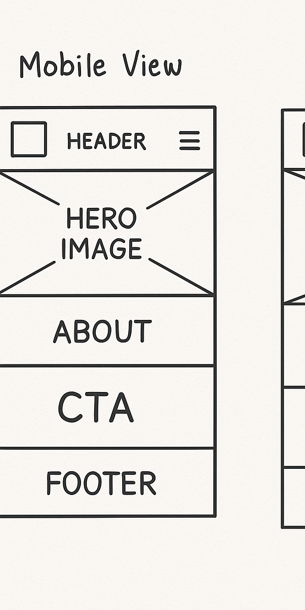
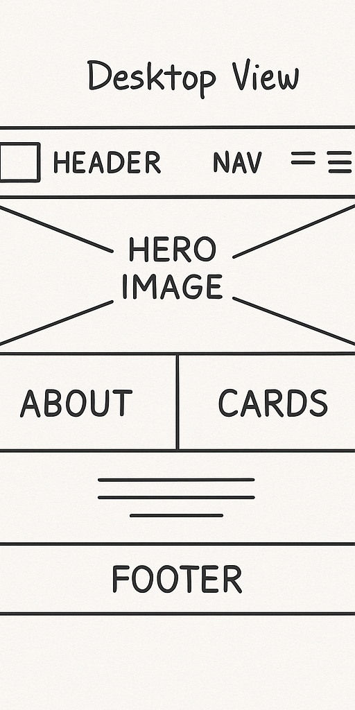

1. Site Name
Site Name: Pelley Moto
This name was selected because it is short, personal, and memorable. The site focuses on my passion for motorcycles, MotoGP, and related content.
2. Site Purpose
The Pelley Moto site aims to provide a platform where motorcycle enthusiasts can explore news, gear recommendations, MotoGP updates, and share their own rides and stories. The site will also have a contact form and gallery section.
3. Scenarios
- What gear is recommended for beginners getting into riding?
- How can I stay updated on the MotoGP calendar and news?
4. Color Schema
- Primary Color: #003366 (Dark Blue) - Used for headers, footer background, and accents.
- Secondary Color: #ffffff (White) - Used for body background and text.
- Accent Color: #ffcc00 (Yellow) - Used for call-to-action buttons and links.
5. Color Schema Use in Document
This page is using the selected colors defined in the color schema above. You can see dark blue headers, white background, and yellow accent links.
6. Typography
- Heading Font: Anton - Used for all major headings.
- Body Font: Roboto - Used for all paragraph text and lists.
7. Wireframes
Mobile View:
Desktop View:
